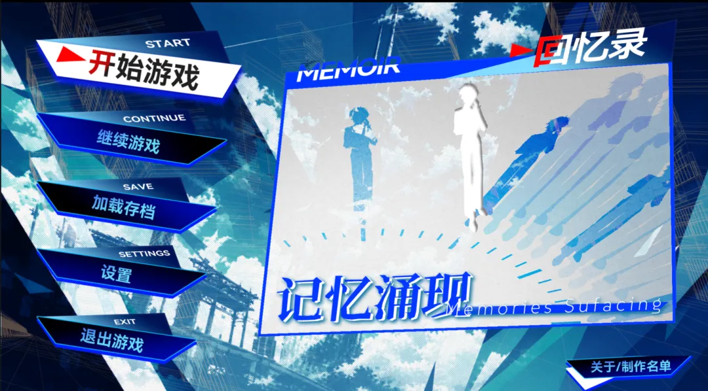
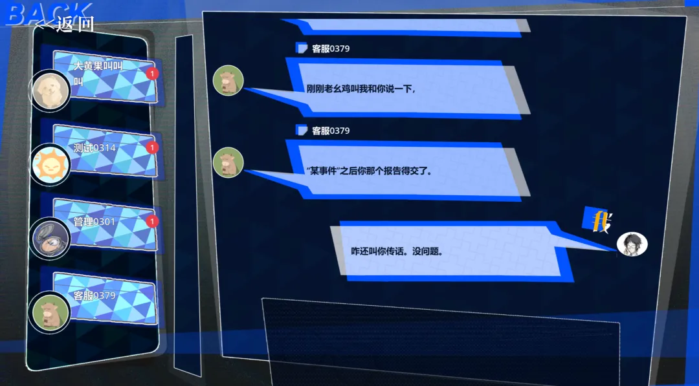
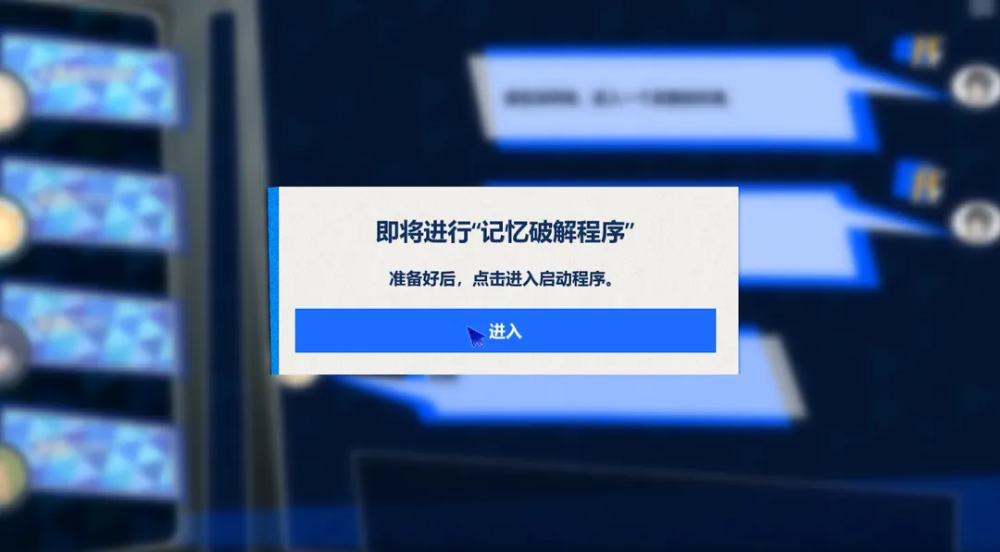
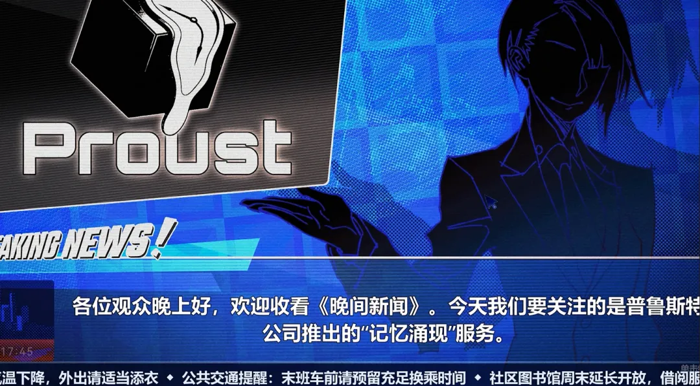

项目成果展示
《记忆涌现》是扉启工作室参加 2026 聚光灯 GameJam 的叙事驱动记忆探索解谜游戏。团队在 21 天内完成从概念、玩法验证到可提交版本的闭环，把主题“涌现”转化成一次可玩的记忆拼图。

游戏类型叙事驱动记忆探索解谜
开发周期2026.10.01 开赛，21 天完成
开发引擎Godot 4.6 · GDScript · Wwise
团队规模20 人，策划 / 程序 / 美术 / 音频 / 文案
核心循环 · 探索—互动—拼凑
接管一段陌生人生
玩家进入一个陌生身体，在原主人的生活场所中调查物件、回应来访、处理客服聊天与小游戏。每一次选择都会被系统记录，零散线索最终汇聚成宿主的故事，也映照出玩家自己的判断。
探索在生活场景中寻找物件、文本与环境线索。
互动应对来访、客服聊天和不同角色的记忆事件。
拼凑用线索板整理碎片，逐步还原宿主的记忆关系。
反馈事件计数记录选择，推动多结局方向与自我反射。
实机截图



主题转化 · 让“涌现”成为玩法
项目没有把“涌现”停留在一句主题文案，而是把它拆成多个可感知的系统：单个物件只提供局部信息，多个记忆碎片被收集、计数、排列后，才逐渐显现出一个人的性格与关系网络。
- 碎片到形象：八个角色的记忆小游戏，让不同类型的记忆以不同操作被体验。
- 选择到叙事：事件计数记录玩家的回应，让结局方向从一连串微小选择中浮现。
- 信息到判断：线索板把分散的物件、聊天和新闻重新组合，玩家需要主动完成最后的解释。
工程与协作
在有限周期里保持可玩闭环
团队采用范围裁剪和快速验证推进制作，优先保证探索、交互、记忆小游戏与线索反馈的完整链路。项目使用 Godot 4.6 与 GDScript 搭建流程，Wwise 负责音频接入，并自研 VN 脚本系统处理对话和事件编排。31 项验收反馈中完成 28 项，完成率约 90%。
系统设计探索交互、线索板、事件计数、多结局方向
内容设计八角色记忆小游戏、客服聊天、新闻与场景文本
技术实现Godot 4.6、GDScript、Wwise、自研 VN 脚本系统
交付结果21 天完成可提交版本，31 项反馈完成 28 项
试玩与外链
设计概述
《记忆涌现》的核心体验是：玩家先在熟悉的日常物件中发现异常，再通过交互和小游戏获得更多片段，最后把片段组织成对一个人的理解。主题“涌现”因此同时存在于叙事和系统中，答案不是一次性告知，而是从玩家的观察与选择里逐步出现。
这是一次以叙事为目标、以系统为载体的 GameJam 实践：在短周期内完成可玩 Demo，验证“记忆碎片如何构成角色”的核心体验，并通过截图、实机视频和 TapTap 页面留下可复盘的版本记录。